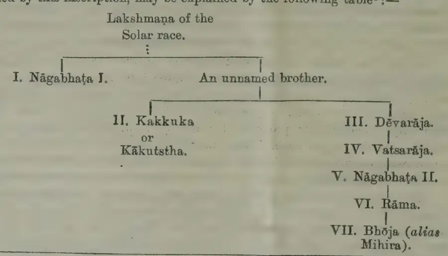

The Gwalior prasasti of the Gurjara-Pratihara king Bhoja
THE GWALIOR PRASASTI OF THE GURJARA-PRATIHARA KING BHOJA.
By R. C. MAJUMDAR, M.A., PH.D.; DACCA.
The stone which bears this inscription was discovered in 1896, about half a mile west of Gwalior town, at Sāgar Tāl in the Gird-Gwalior district. It contains 17 lines of writing covering a space of about 3' 4½" broad by 1' 2" high. The first twelve lines are incised with great care and neatness and the letters are so distinct and beautiful that they can be read without hesitation even from a distance. The remaining lines, for some unaccountable reasons, are not so distinctly engraved, but can be read, without any great difficulty, especially from the reverse side of the estampage. The whole inscription is thus clearly legible except two letters at the end of line 5 where the stone surface is damaged.
It was first edited by Pandit Hirananda in the Arch. Surv. Report for 1903-4 (pp. 277-285), with a facsimile Plate. Then, in March 1905 Dr. Kielhorn gave a short account of the inscription in Nachrichten von der Königlichen Gesellschaft der Wissenschaften zu Göttingen (pp. 300-304) without any reference to the first edition. I re-edit the inscription from fresh impressions kindly procured for me by Prof. D. R. Bhandarkar, M.A. My excuse in taking up the subject again, is that, in my opinion, the great historical importance of the record requires further scrutiny and comment. I follow the previous Editors as far as possible but give my independent opinion only in cases where I feel it necessary to do so.
The language of the inscription is Sanskrit, and except the benedictory formula om namō Vishṇavē at the beginning, it is throughout composed in metrical form. The author shows himself to be well versed in the best form of the Kāvya style, and his chaste dignified verses make one sincerely regret that no further production from his able pen has been preserved for us. Special attention may be drawn to the ease with which ślēshas and dhvanis have been frequently introduced into this historical poem.
1 [The word tishṭha is onomatopoetic. As one plunges his legs in miry ground and lifts them up with force, the steps are likely to make the noise tishṭha, tishṭha — Ed.]
The important points to note in the matter of orthography have been already mentioned by Pandit Hirananda in A. S. R. for 1903-04 pp. 277 ff.
The use of dental nasals instead of anusvāra, e.g. in hinśraṅ (v. 3), and in vantś (v. 4); the different spellings of the same proper name as in Pratihāra (v. 3) and Pratihāra (v. 4): and the change of the visarga followed by s into that letter, e.g. in yasy=aitās=sampadaś=cha (v. 6), °stais=samuchita-charitaiḥ (v. 12), and upāyais=sampadāṅ (v. 13) may be noticed.
The characters of the inscription are of the Nāgarī type current in Northern and Western India during the ninth century A.D. Pandit Hirananda remarks that they resemble most closely those of the Pehevā grant of Mahēndra-Pāla. But a close examination of the two records shows that the letters i, t, ṇ, th, dh, n, m, l, and ś of our inscription are different from those employed in the Pehevā grant.1 As a matter of fact, the only published inscription to which our record shows the closest resemblance is the Gwalior inscription of Bhōja of the year 933.2 The only noticeable difference between the two records is to be found in the new forms of bh and ś used in the latter, in addition to those employed in our inscription. The close resemblance between these two records is only quite natural as both come from the same locality and belong to the same reign.
It may be noted that the new forms of bh and ś which we find in the Gwalior inscription of the year 933 along with those in our record, have alone been used in all the later inscriptions of the dynasty, of which facsimiles are available, with the single exception of the Pehevā grant of Mahēndra-Pāla. On the other hand, only the forms used in our record are found in the Buchkalā inscription of Nāgabhaṭa, dated V.S. 872,3 the only known record of the dynasty before the time of king Bhōja. It may thus be presumed that the record is earlier than 933 V. S., although much stress should not be laid on this conclusion in view of the recurrence of the forms in the Pehevā grant.
The inscription records the erection of a house in his seraglio, by the Gurjara-Pratihāra king Bhōja in honour of Vīshṇu, and begins with an invocation to that God. Verse 2 describes the creation of the Sun and names some important kings born in the Solar race. Verse 3 refers to Rāma and his terrible fight with Rāvaṇa. The family to which Bhōja belonged is traced from Lakshmaṇa, the younger brother of Rāma (v. 3). The genealogy of the family, as furnished by this inscription, may be explained by the following table4:—

1 Cf. the plate, above, Vol. I, p. 244.
2 Ibid, p. 160.
3 Above, Vol. IX, p. 198.
4 Some of these kings had also other appellations; Cf. the genealogical table above, Vol. XIV, p. 179.
Of these, Nāgabhaṭa I defeated a Mlēchchha army (v. 4), and Dēvarāja is said to have defeated a host of kings (v. 5). His son Vatsarāja, a famous king, forcibly wrested the empire from the Bhaṇḍi clan (vv. 6-7) and Nāgabhaṭa II defeated Chakrāyudha and also conquered kings of the Ānartta, Turushka, Mālava, Vatsa, Matsya and other countries (vv. 8-11). Bhōja, also called Mihira, is said to have defeated his powerful enemies and verses 16-26 describe his greatness in general terms.
The chronology of the kings mentioned in this inscription may be fixed with a tolerable degree of certainty. We have the dates 756-7 A.D. for Nāgabhaṭa I, 783-4 A.D.1 for Vatsarāja, 815 A.D. for Nāgabhaṭa II, and dates ranging from 843 to 881 A.D. for Bhōja. Again, we learn from a Jaina book, the Prabhāvaka-charita, that king Nāgāvalōka of Kānyakubja, the grand-father of Bhōja died in 890 Vikrama-Sainvat, and this Nāgāvalōka has been correctly identified with Nāgabhaṭa II.1 Thus the first three kings of the genealogical table may be placed between 725 and 775 A.D., and the fourth, fifth, sixth and seventh kings may be taken to have ascended the throne respectively at about 775, 800, 833 and 840 A.D.
Before the discovery of this inscription, our knowledge of the Gurjara-Pratihāra kings, who played such an important part in Indian history, was very limited and inaccurate. Although the late A. M. T. Jackson, M.A., I.C.S., and Prof. Bhandarkar2 laid the true foundation of our knowledge about the Gurjara-Pratihāra history, a complete understanding of the subject, in all its bearings, was impossible, in consequence of the view held by Dr. Fleet, Dr. Kielhorn and others, that the homonymous kings referred to in the copper-plates lived earlier than, and were thus different from, those mentioned in the stone inscriptions. It was the discovery of this inscription that finally settled the question and facilitated the proper treatment of the Gurjara-Pratihāra history.3 Dr. V. A. Smith has clearly pointed out,4 that the express mention of the family name of the kings in this inscription helps us to definitely assign the royal dynasty of Kanauj to the Gurjara-Pratihāra clan.
The rise and growth of the great Gurjara empire, which played such a conspicuous part in Indian polity in the ninth century A.D., is clearly traced by our inscription. The names of the early kings of the dynasty, recorded in inscriptions, such as the Daulatpurā copper-plate of Bhōjadēva,5 Dighwā Dubauli plate of Mahēndrapāla6 and the Bengal Asiatic Society's copper-plate of Vināyakapāla7 are but a mere string of names without any details such as are to be found in the present inscription. This invests our record with particular importance, and the data it furnishes may be justly said to have revealed an altogether new chapter of Indian history.
The founder of the royal line is named Nāgabhaṭa, a name not yet found in any other record of the family. He is said to have defeated the Mlēchchha army, and the manner in which this solitary fact is mentioned with regard to him, seems to show that it was looked upon
1 Above, Vol. XIV, p. 179, foot-note 3.
2 A. M. T. Jackson, in Bombay Gazetteer, Vol. I, Part I, App. III; Prof. D. R. Bhandarkar in J. Bo. Br. E. A. S., Vol. XXI, p. 405 f., 413 f.
3 This point is fully brought out by Dr. Kielhorn (loc. cit).
4 J. R. A. S., 1909, p. 58.
5 Above, Vol. V, p. 208.
6 Ind. Ant., Vol. XV, p. 105.
7 Ibid., p. 138.
as of great importance in the history of the family. Now the locality of Nāgabhaṭa's kingdom and the period when he flourished may be gathered from a passage in the Jaina Harivamśa.1 The passage has been noticed by various scholars, and the following remarks of Dr. Fleet may be taken to represent the earlier views regarding its interpretation. "A passage in the Jain Harivamśa of Jinasēna tells us that that work was finished in Śaka-Samvat 705 (expired), =783-784 A.D., when there were reigning,—in various directions determined with reference to a town named Vardhamānapura, which is to be identified with modern Waḍhwān in the Jhālāvād division of Kāṭhiāwār,—in the north, Indrāyudha; in the south, Śrivellabha; in the east, Vatsarāja, king of Avanti (Ujjain); and in the west, Varāha or Jayavarāha, in the territory of the Sauryas."2 This seems to have been the accepted view till 1902 when Prof. D. R. Bhandarkar gave a somewhat different interpretation of it. He translated the last portion as follows:—"In the east, the illustrious king of Avanti; in the west, king Vatsarāja; (and) in the territory of the Sauryas, the victorious and brave Varāha."3 Quite recently Prof. D. R. Bhandarkar has drawn my attention to a passage in an unpublished copper-plate grant in his possession4, which runs as follows:—
"Hiranyagarbhaṁ rājanyair=Ujjayanyāṁ yad=āsitam |<
Pratihārikpitaṁ yēna Gurjar-ē-ādi-rājakam ||"
This points to a Gurjara-Pratihāra kingdom in Ujjayini; for, the word Pratihāra, apart from its usual meaning, is evidently an allusion to the name of the clan. This is decisive in favour of Dr. Fleet's interpretation of the passage.
It has been unanimously held by scholars that Vatsarāja, referred to in the above passage, is the Pratihāra king of the same name, the grand-nephew of Nāgabhaṭa. As Vatsarāja was reigning in 783-784 A.D., Nāgabhaṭa may be taken to have flourished in about 725 A.D. Again, Avānti must be looked upon as the home-territory of the dynasty, for, although Vatsarāja ruled over a vast kingdom, he is simply called the ruler of Avanti in the passage quoted from the Harivamśa. It may be held, therefore, that Nāgabhaṭa ruled over Avanti about 725 A.D.
As we have seen, in connection with the Jodhpur inscription of Pratihāra Bāuka5, this was the period when the great Arab raid took place. As Bilāduri6 clearly mentions Ujjain as being attacked by the Arabs, there can scarcely be any doubt that the Gwalior inscription, like the Nausāri plates, refers to the Arab expedition described by Bilāduri.
Our inscription tells us that the Arab forces were defeated by Nāgabhaṭa I, and this is fully in keeping with the account of Bilāduri, who observes:—"They (i.e., the Arabs) made incursions against Uzain, and they attacked Baharimand and burnt its suburbs. Junaid conquered Al Bailaman and Jurz . . ." Thus whereas other places were conquered, the Arabs merely sent
1Ind. Ant., Vol. XV, p. 141; Bombay Gazetteer, Vol. I, Part II, p. 197, f.n. 2.
2 Above, Vol. VI, pp. 195-6.
3J. Bo. Br. R. A. S., Vol. XXI, p. 421, f.n. 4.
4 It was formerly in the possession of his elder brother, late Prof. S. R. Bhandarkar and noticed by him in J. Bo. Br. R. A. S., Vol. XXII, p. 117. It will be henceforth referred to as the Sañjān copper-plate. Prof. D. R. Bhandarkar is engaged in editing it for the Ep. Ind. and I take this opportunity of expressing my indebtedness to him for having kindly permitted me to use the inscription before its publication.
5 See above, p. 93.
6 For Bilāduri's account of the Arab expedition, cf. Elliot's History of India, Vol. 1, p. 126.
incursions against Ujjain, and if we remember that this is from the pen of an Arab historian, it must be looked upon as a tacit admission that the Arabs failed in their expedition against Ujjain. It is also significant, that the Nausāri plates1 do not include the king of Avanti in the list of those that were defeated by the Arabs. Further, Biláduri himself admits that Junaid's successor was feeble, and, in his days, the Musulmans retired from several parts of India and left some of their possessions.
Thus all the available evidence shows that Nāgabhaṭa I established the greatness of his family by his triumphant success over the Arabs. The Hānsōt plates of the Chāhamāna feudatory Bhartrivadḍha II2 records a grant that was made at Broach, in the increasing reign of victory of the glorious Nāgāvalōka, in the year 756 A.D. Prof. D. R. Bhandarkar3 upheld the view that this Nāgāvalōka is no other than Nāgabhaṭa I, and Dr. Sten Konow4 has accepted it. It would then follow that he re-established the Pratihāra sovereignty over Broach which the family of Jodhpur must have lost during the Arab expeditions. A reminiscence of Nāgabhaṭa's struggle with the neighbouring powers seems to have been preserved in the Raghōli plates of Jayavardhana II, a king of the Śaila dynasty, ruling over part of the Central Provinces. We are told that Prithuvardhana, a king of the family, who probably ruled about the middle of the eighth century A.D., conquered the country of the Gurjaras.5
We have seen above, in connection with the Jodhpur inscription of the Pratihāra Bāuka, how, as an indirect result of the Mlēchchha invasion, the suzerainty hitherto enjoyed by the dynasty of Harichandra passed into the family of Nāgabhaṭa. It would appear that shortly after 725 A.D., when the Arab invaders seemed to have carried away everything before them, and, in particular, defeated the Pratihāra clan who had been ruling in Rājputānā for about two centuries, Nāgabhaṭa gained successes over the Mlēchchha forces and established his supremacy over the clan. The struggle which thus began between the two Pratihāra families was long and tedious. Śiluka, the king of the Rājputānā family, succeeded in regaining his territory after defeating one Dēvarāja, probably the nephew of Nāgabhaṭa I. Vatsarāja, the son and successor of Dēvarāja, however, continued the struggle and gave the final blow to the tottering rival power. The empire over which it had ruled for well-nigh two hundred years then finally passed into the hands of the family of Nāgabhaṭa.
The data furnished by our inscription, supplemented by a few other known facts, enable us to sketch a brief history of the empire that was thus founded by Vatsarāja. Verses 6 and 7 describe his mighty prowess and splendour, and mention, in particular, that he had subdued the whole world. This statement, allowing for the natural exaggeration of the Praśasti writers, cannot be said to be altogether inaccurate, inasmuch as it is pretty certain that Vatsarāja had conquered the lord of Gauḍa and was thus probably master of by far the greater part of Northern India. This state of prosperity, however, did not continue long. The Rāshṭrakūṭa king Dhruva inflicted a crushing defeat upon him, overran his territory as far as the Ganges
1 Transactions of the Vienna Oriental Congress, Arian Section, p. 231.
2 Above, Vol. XII, p. 197.
3 Ind. Ant., 1911, p. 240.
4 Above, Vol. XII, p. 200.
5 Above, Vol. IX, p. 41.
and Jumna, and forced him to take shelter in the deserts of Rājputānā.1 The effects of the Rāshṭrakūṭa blow seem to have been disastrous. The Pālas took advantage of this opportunity and entered the field as rivals of the Gurjaras. Dharmapāla, the second king of the dynasty, carried a campaign of conquest from one end of northern India to another, and placed his own nomince Chakrāyudha on the throne of Kanauj, apparently as a bulwark against the possible Gurjara invasions.2 The Gurjara power was, however, merely stunned by the blow for the time being, and Nāgabhaṭa II, the son and successor of Vatsarāja, once more sought to realise the imperial dreams of his father (vv. 8-11). The poet tells us in v. 8, that kings of Sindhu, Āndhra, Vidarbha and Kalinga succumbed to his power like moths unto fire. Now, moths are attracted by the glare of the fire and approach it of their own accord, although it leads to their ultimate destruction. The force of this simile is preserved if we suppose that the kings of these four countries were not conquered by Nāgabhaṭa but joined him of their own accord in the first instance, although, ultimately, they lost their power thereby. The position of these four countries confirms this view. Joined to Mālwā and Rājputānā which were the home-territory of the Gurjaras, the four countries form a central belt right across the country, bounded on the north by the empire of the Pālas, and, on the south, by that of the Rāshṭrakūṭas. It appears quite likely, therefore, that they formed a confederacy against the two great powers that pressed them from the two sides, although, as so often happens, the most powerful member of the confederacy ultimately reduced the others to a state of absolute dependence. This seems to me to be the real significance of the eighth verse. In the next, the poet describes the first achievements of the confederacy thus successfully launched by the Gurjara king, viz. the defeat inflicted upon Chakrāyudha. War with Chakrāyudha was, however, but a prelude to the war with the Pāla king whose protége he had been, and this is described in the next verse, in words befitting the occasion. The simile which the poet employs in this connection is, again, significant. We are told that after defeating the dark dense array of the lord of Vaṅga, Nāgabhaṭa revealed himself even as the rising Sun reveals himself by dispelling the dense darkness. This means, in plain language, that the rise of Nāgabhaṭa was possible only if he could defeat the Vaṅga king, and that is why he first turned his arms in this direction. The Sun of Gurjara glory had set with Vatsarāja, and the fortunes of his family, crushed by his powerful enemies, lay enveloped in the darkness of night as it were, till a defeat inflicted upon them ushered in a new dawn for the Gurjaras in the east. Soon the dawn passed away and the Sun reached its noonday height; for, the next verse informs us that Nāgabhaṭa captured the strongholds of the Ānartta, Mālava, Kirāta, Turushka, Vatsa and Matsya countries. The poet leaves his hero in the height of his glory, but we know from other records that the Sun reclined to the west and the dusk set in even in the life-time of Nāgabhaṭa II. We learn from the Rāshṭrakūṭa records that the kings of Gurjara, Mālava and other countries along the Vindhya mountains were defeated by Gōvinda
“ Yō Ģaṅgā-Yamunē taraṅga-subhagē grihṇan=parōbhyaḥ samarī |
sākshāch-chihna-nibhēna ch=ōttama-padarī tat=prāptavān=aiśvararī ||
dēh-āsammita-vaibhavair=iva guṇair=yyasya bhramadbhir=ddiśō |
vyāptās=tasya babbūva kīrtti-purushō Gōvinda-rājaḥ sutaḥ ||”
1 Cf. verse 8 of the Rādhanpur plates of Gōvinda III, above, Vol. VI, p. 243. That Dhruva actually proceeded as far as the Ganges and the Jumna is clear from the following passage of the Barōdā plates of Karkarāja:—
Ind. Ant., Vol. XII, p. 159.
Dr. Fleet who edited the above inscription took the first two lines as referring to Gōvinda III (Ibid., p. 163), and Mr. R. Chanda also adopted the same view (Mānasī, Vol. VII, p. 589). In my humble opinion this is a mistake and the last line clearly shows that the reference is not to Gōvinda-rāja but to his father Dhruva.
2 Cf. v. 6 of the Khālimpur copper-plate (above, Vol. IV, p. 243 f.) and v. 3 of the Bhāgalpur copper-plate of Nārāyaṇapāla (Ind. Ant., Vol. XV, p. 304 f.).
III1 and one inscription specifically refers to the defeat inflicted upon Nāgabhaṭa by the same king, and his triumphant march to the Himālayas2. It would thus appear that the Gurjara empire so laboriously rebuilt by Nāgabhaṭa II once more fell beneath the crushing blows of the hereditary foes of his family. There are reasons to believe that this was brought about by a confederacy between the two chief enemies of the Gurjaras, viz. the Pālas of Bengal and the Rāshṭrakūṭas of the south. For the same inscription that records the defeat of Nāgabhaṭa II in the hands of Gövinda III also mentions the fact that Dharmapāla and Chakrāyudha visited or submitted to the last named king of their own accord3.
The victory of the Rāshṭrakūṭas, although by no means final and decisive, was no doubt disastrous to the Gurjaras. The province of Mālwā passed into the hands of the Rāshṭrakūṭa, and Āndhra, Vidarbha and Kalinga also possibly shared the same fate. The Pratihāras, however, did not cease to give trouble to the Rāshṭrakūṭas, for we are told in the inscription of the feudatory chief Karkarāja of Gujarāt, that the Rāshṭrakūṭa king had “caused his arm to become an excellent door-bar of the country of the lord of the Gurjaras.”4
But ere long the political situation changed. The Rāshṭrakūṭas themselves were torn asunder by internal dissensions. Karkarāja of Lāṭa, the son and successor of Indrarāja, was expelled by his younger brother in 812 A.D., and what was worse still, the revolutionary movement, thus set on foot, afterwards developed into an attempt to prevent the accession of Amōghavarsha I.5
This unexpected embroglio in the Rāshṭrakūṭa affairs left the Pālas and the Gurjaras free to fight among themselves. It appears that Nāgabhaṭa retained his hold upon Kanauj
“ Yen=aikēna cha Gūrjjar-ēśvara-patir=yyōddburn samabhyudyataḥ
śauryya-prōddhata-kandharō mṛiga iva kshiprain diśō grāhitaḥ !
bhīt-āsaṇ (m)hata-Dakshiṇāpatha-mahā-sāmanta-chakraṇ yatō
rakshām=āpa viluṇṭhyamāna-vibhavarṇ Śrīvallabhēn=ādarāt ||
Ind. Ant., Vol. XII, p. 160.
As it is explicitly stated that Indrarāja was placed on the throne of Lāṭa by Gövinda III, this defeat of the Gurjaras must have taken place during his reign. It was thus different from the expedition undertaken by Dhruva against Vatsarāja, and the word ēkēna distinguishes it from the campaign of Gövinda III referred to in the Rādhanpur plate or the Nilgund inscription. Thus the opponent of Indrarāja was most likely Nāgabhaṭa himself who is represented in the above passage as entering into some alliance, protective or defensive, if not offensive, with the mahāsāmantas of the south against Gövinda III and actually prepared for war (cf. Fleet's remarks, ibid, p. 158). This fully confirms what I have suggested above on the strength of the eighth verse of our inscription.
The other passage refers to Karkarāja as follows :—
Gauḍ-ēndra-Vaṅgapati-nirjjaya-durvvidagdha =
sad-Gūrjjar-ēśvara-dig-arggalatārn cha yasya ||
nītvā bhujarn vihata-Mālava-rakshaṇārttharṇ !
svāmī tathā=nyam=api rājya-chha(pha)lāni bhuṇktē ||
Dr. V. A. Smith identified the “ Lord of Gurjaras” in the above passage with Vatsarāja (J. R. A. S., 1909, p. 252). But this is untenable. As Gövinda died about 814 A.D., it must be maintained that the Gurjara chief against whom he employed his nephew in 812-3 A.D. could not be any other than Nāgabhaṭa who is specifically mentioned as being defeated by him (see f. n. 2 below). As Nāgabhaṭa defeated Vaṅgapati, the phrase “ Gauḍ-ēndra Vaṅgapati-nirjjaya-durvvidagdha ” might well apply to him, and the Buchkalā inscription (above, Vol. IX p. 198) shows that he was ruling in 815 A.D.
1 Cf. Rādhanpur plates, v. 15 (above, Vol. VI, p. 244), and the Nilgund ins., v. 5 (ibid, p. 102). Two passages in the Barōdā plates of Karkarāja also seem to refer to the conflict between Nāgabhaṭa and the Rāshṭrakūṭas. Thus it is said with reference to Indrarāja, the brother of Gövinda III, and the founder of the Gujarāt branch of the Rāshṭrakūṭas :—
2 The Sañjān copper-plate ; J. Bo. Br. R. A. S., Vol. XXII, p. 118.
3 Svayam=ēv=ōpanatau cha yasya mahatas=tau Dharma-Chakrāyudhau || (Ibid.)
4 Barōdā plates of Karkarāja ; ll. 39-40 ; Ind. Ant., Vol. XII, p. 160.
5 Bombay Gazetteer, Vol. I, Part II, pp. 402, 409.
which he had conquered from Chakrāyudha, transferred his capital there, and probably succeeded in offering an effective resistance to the Pālas till his death in 833-834 A.D.
Of Rāmabhadra, the son and successor of Nāgabhaṭa II, we know very little, but that the Gurjara power declined during his reign is quite evident from the scattered-notices we possess about him. The twelfth verse of our inscription seems to imply that Rāmabhadra freed his country from the yoke of foreign soldiers. It seems likely that the band of foreign soldiers belonged to the Pālas, for the other rival power (the Rāshṭrakūṭas) is not known to have advanced as far as the Gurjara kingdom at this period. The Daulatpurā plates1 also lead to the same conclusion. It renews the grant of a piece of land in Gurjaratrā which was originally made by Vatsarāja, and continued by Nāgabhaṭa, but had fallen into abeyance in the reign of Bhōja. This seems to indicate that the province was held by Vatsarāja and Nāgabhaṭa II but lost by Rāmabhadra and regained by Bhōja, some time before 843 A.D., the date of the inscription.
Bhōja, the son and successor of Rāmabhadra, seems to have been a very powerful king and is described in nine grandiloquent verses. He inflicted a crushing defeat upon his powerful enemies and the poet seems to imply in verse 18, that the Goddess of Fortune forsook Dēvapāla and chose Bhōja as her lord. It would thus appear that Bhōja regained the power and prestige of the family by defeating the Pāla king. Our inscription closes with the resuscitation of the glory of the Gurjara Pratihāra clan under Bhōjadēva. The poem reflects the true sentiment of the Gurjaras whose revivified enthusiasm, after a long period of stress and storm, led them once more to embark on that struggle for empire which had been unsuccessfully waged for four generations.
The hereditary struggle with the Pālas and the Rāshṭrakūṭas which seems to be the cardinal fact in the history of the Gurjaras is also referred to in the inscriptions of the feudatory princes of the latter. Thus the Jōdhpur inscription of the Pratihāra Bāuka published above informs us that Kakka defeated the Gauḍas at Mudgagiri or Monghyr. Most likely he had accompanied Nāgabhaṭa II in his eastern wars. Another chief that probably accompanied Nāgabhaṭa II on the same occasion was Vāhukadhavala, the chief of Surāshṭra. For, we learn from an inscription of his great-grandson Avanivarman II, a feudatory of Mahēndrapāladēva, that he defeated king Dharma in battle, and as Kielhorn observes, this king Dharma may be identified with the Pāla emperor of the same name.2 We can still trace a third chief who joined Nāgabhaṭa in his expedition against Bengal. This is Śaṅkaragaṇa, the Guhilot prince, referred to in the Chātsū inscription of Bālāditya.3 Again, Harsharāja,
1 Above, Vol. V, page 208.
2 Above, Vol. IX, p. 2 f. Kielhorn held that Vāhukadhavala lived in the middle of the ninth century A.D. and was a feudatory of Bhōja (ibid, p. 3). Dr. V. A. Smith (J. R. A. S., 1909, p. 266) and Mr. R. Chanda (Gauḍa-rāja-mālā p. 28) have supported this view. But as his great-grandson was a feudatory of Mahēndrapāla at the end of the ninth century A.D. it is more reasonable to hold, as Mr. R. D. Banerji has done (Bānglār. Itihāsa, p. 167), that Vāhukadhavala was a feudatory of Nāgabhaṭa at the beginning of the ninth century A.D.
3 Above, Vol. XII, p. 10 f. It contains the following verse with reference to Śaṅkaragaṇa :—
“Pratijñāin prāk=kritvō=dbhata-kari-ghatā-saṅkata-raṇĉ bhatarā jitvā Gauḍa-kshitipam=avanim saṅgara=hṛitārin balād=dāsīrin chakrē [pra]bhu-charanayōr=yaḥ praṇayinim tatō bhūpaḥ sō=bhūj=jita-bahu-raṇaḥ Saṅkaragaṇaḥ ||”
Prof. D. R. Bhandarkar who edited this inscription concluded from the above that Śaṅkaragaṇa conquered Bhata, the king of the Gauda contry, and made a present of this kingdom to his overiord. He further suggested that this Bhata might be Sūrapāla. I beg to differ from these views of the learned scholar. The verse seems to mean that Śaṅkaragaṇa defeated the king of Gauḍa, a great warrior (bhata), and made the whole world, gained by warfare, subservient to his overlord. Secondly, Śaṅkaragaṇa was the great-grandson of Dhanika, one of whose known dates is 725 A.D. (ibid, p. 11). Śaṅkaragaṇa should therefore be taken as a contemporary of Nāgabhaṭa and Dharmapāla at the beginning of the ninth century A.D. The verse thus shows that Śaṅkaragaṇa belped his overlord Nāgabhaṭa to wrest the empire from Dharmapāla by defeating the latter.
the son of Śānkaragaṇa, is said to have conquered the kings in the north and presented horses to Bhōja, who has been rightly identified with the great Pratihāra emperor Bhōja by Prof. D. R. Bhandarkar.1 Further Guhila II, the son of Harsharāja, is said to have defeated the Gauḍa king and levied tribute from the princes in the east.2
TEXT.3
[ Metres : vv. 1, 8-11, 26, Vasantatilakā ; vv. 2, 4, 7, 18, 19, Śārdūlavikrīḍita ; vv. 3, 5, 6, 12, 27, Sragdharā ; vv. 13, 14, 16, 21-23, 25, Anushṭubh ; vv. 15, 24, Upajāti ; v. 17, Śikhariṇī ; v. 20, Hariṇī.]
1 Om3a namō Vishṇavē ||
Śēsh-āhi-talpa-dhaval-ādhara-bhāga-bhāsi-
vakshaḥ-sthal-ōllasita-Kaustubha-kānti-śōṇaṁ |
śyāmaṁ vapu[h*] śaśi-virōchana-vimva(bimba)-chumvi(mbi)-
vyōma-prakāśam=avatān=Naraka-dvishō vaḥ || 1 ||
Ātm-ārāma-phalād=upārjya vijaraṁ dēvēna Daitya-dvishā
jyōtir-vvijam4=akṛittrimē
2 guṇavat[i] kshēttrē yad=uptaṁ purā |
śrēyaḥ-kanda-vapus=tatas=samabhavad=Bhāsvān=ataś=ch=āparē
Manv-Ikshvāku-Kakustha5-mūla6-Pṛithavaḥ kshmāpāla-kalpa-ddr[u]māḥ || 2 ||
Tēshāṁ vaṁsē sujanmā krama-nihita-padē dhāmni vajr-ēshu-ghōraṁ
Rāmaḥ Paulastya-hinśraṁ7 kshata-vihati-samit-karmma chakrē palāśaiḥ |
ślāghya-
3 s=tasy=ānujō=sau Maghava-mada-mushō Mēghanādasya sainkhyē
Saumittris=tīvra-daṇḍaḥ pratiharaṇa-vidhēr=yaḥ pratihāra āsit || 3 ||
Tad=vanśē3 Pratihāra-kētana-bhṛiti ttrailōkya-raksh-āspadē
dēvō Nāgabhaṭaḥ purātana-munēr=mūttir9=vva(bba)bhūv=ādbhutaṁ |
yēn=āsau sukṛita-pramāthi-va(ba)lavan10-Mlēchchh-ā-
4 -dhip-ākshauhiṇiḥ
kshundāna11sphurad-ugra-hēti-ruchirē(rai)r=ddōrbhíś=chaturbhir=vvabhau12 || 4 ||
Bhrātus=tasy=ātmajō=bhūt=kalita-kula-yaśaḥ khyāta-Kākustha13-nāmā
lōkē gitaḥ pratika-priya14-vachanatayā Kākkukaḥ kshmābhṛid-iśaḥ |
śrīmān=asy=ānujanmā Kuliśa-dhara-dhurām=udvahan=Dēvarājō
yajñē15=chchhin16-ōru-paksha-kshapita-ga-
1 Above, Vol. XII, p. 12.
2 Verse 28 of the Chāṭsū inscription. Ibid, p. 15.
3 From the ink-impressions supplied by Prof. D. R. Bhandarkar, M.A. 3* Expressed by a symbol.
4 Read -bbījam-. 5 Read -Kakūstha-.
6 [Could Mūla stand for Mūla ka for which see Pargiter Anot. (Ind.) Hist. Trad. p. 147—Ed.]
7 Read -hiṁsraṁ. 8 Read -vaṁse. 9 Read -mūrtir-.
10 Pandit Hirananda reads it as 'Valana' and Prof. D. R. Bhandarkar reads it as 'Valacha (Ind. Ant., 1911, p. 240). The third letter, however, seems to me to be clearly a va, it being quite distinct on the reverse of the ēstampage. I therefore read the whole expression as 'valavan-Mlēchchhā.' The loop of m in the conjunct consonant nmiē is probably omitted through the engraver's mistake.
11 Read kshundānas-.
12 Read =bbaḥhau.
13 Read -Kākūstha-.
14 Read -priya-.
15 Read -jajñē-.
16 Read -chchhin-.
5 ti kulam bhübhritām samniyantā || 5 ||
Tat=sūnuh prāpya rājyaṇ nijam=Udayagiri-sparddhibhāsvat-pratāpaḥ
kshmā-pālaḥ prādurāsin=nata-sakala-jagad-vatsalō=Vatsarājaḥ |
yasy=aitās=sampadaś=cha dvirada-mada-sur-āsvāda-sāndra-pramōdāḥ
padmākshir=ākshipantya1 praṇayi-jana-parishvaṅga-kāntā virējuḥ || 6 ||
Khyā[tād2=Bhaṇḍi]-
6 -kulān=mad-ōtkaṭa-kari-prākāra-durllaṅghatō
yaḥ sāmrājyayadhijya3-kārmmuka-sakhā saṁkhyē haṭhād=agrahit
ēkaḥ Kshattriya-puṅgavēshu cha yaśō-gurvvin=dhuram prōdvahann=
Ikshvāk[ō]ḥ kulam=unnataṇ sucharitaiś=chakrē sva-nām-āṇkitaṇ || 7 ||
Ādyaḥ pumān=punar=api sphuṭa-kirttir=asmāj=
jātas=sa ēva kila Nāgabhaṭas=tad-ākhyaḥ |
yattr=Ā-
7 -ndhra-Saindhava-Vidarbha-Kaliṅga-bhūpaiḥ
Kaumāra-dhāmani pataṅga-samair=apāti || 8 ||
Ttra(tra)yy=āspadasya sukritasya saṁriddhim=ichchhur-
yaḥ Kshattra-dhāma-vidhi-vaddha-vali-pravandhaḥ4 |
jitvā par-āśraya-krita-sphuṭa-nicha-bhāvaṇ
Chakrāyudhaṇ vinaya-namra-vapur=vvyarājat || 9 ||
Durvvāra-vairi-vara-vāraṇa-vāji-vāra-
yāṇ5-augha-saṅghaṭa-
8 na-ghōra-ghan-āndhakāraṇ |
nirjjitya Vaṅgapatim=āvirabhūd=vivasvān=
udyann=iva ttrijagad-ēka-vikāsakō-yaḥ || 10 ||
Ānartta-Mālava-Kirāta-Turushka-Vatsa-
Matsy-ādi-rāja-giri-durgga-haṭh-āpahāraiḥ |
yasy=ātma-vaibhavam=atindriyam=ā-kumāram=
āvirvvabhūva6 bhuvi viśvajanīna-vṛittēḥ || 11 ||
Taj-janmā Rāma-
9 nāmā pravara-hari-vala7-nyasta-bhūbhrit-pravandhair9=
āvadhnan9=vāhinInāṇ prasabham=adhipatin=uddhata-krūra-satvāṇ |
pāp-āchār-āntarāya-pramathana-ruchiraḥ saṅgata10 kirtti-dārais=
trātā dharmmasya tais=tais=samuchita-charitaiḥ pūrvvavan=nirvvabhāsē11 || 12 ||
Ananya-sādhan-ādhīna-pratāp-ākrānta-di-
10 īmukhaḥ |
upāyais=sampadāṇ svāmi yaḥ sa-vṛiḍam=upāsyata || 13 ||
Arthibhir=vviniyuktānāṇ sampadāṇ janma kēvalaṇ |
1 Read ākshipantyaḥ.
2 Only the first letter is distinct.
3 Read sāmrājyam=adhijya-.
4 Read baddha-bali-prabandhaḥ.
5 Read yān-.
6 Read āvirbbabhūva.
7 Read bala.
8 Read -prabandhair-.
9 Read -ābadhnan-.
10 Read saṅgatuḥ.
11 Read =nirbbabhāsē.
yasy=ābhūt=kritinaḥ prityai n=ātm-ēchchhā-viniyōgataḥ || 14 ||
Jagad-vitrishnuḥ sa viśuddha-satvaḥ
prajāpatitvaṁ viniyōktukāmaḥ |
sutaṁ rahasya-vrata-suprasannāt=
Sūryād=a vā-
11 -pan=Mihir-ābhidhānaṁ || 15 ||
Uparōdh-aika-saṁruddha-Vindhya-vṛiddhēr=Agastyataḥ
ākramya bhūbhṛitāṁ bhōktā yaḥ prabhur=Bhōja ity=abhāt || 16 ||
Yaśasvi śānt-ātmā jagad-ahita-vichchhēda-nipuṇaḥ
parishvaktō Lakshmyā na cha mada-kalaṇkēna kalitaḥ |
vabhūva1 prēm-ārdrō guṇishu vishayaḥ sūṇrita-
12 girām-
asau Rāmō v=āgrē sva-kriti-gaṇanāyām=iha Vidhēḥ || 17 ||
Yasy=ābhūt=kula-bhūmi-bhṛit-pramathana-vyast=ānya-sainy-āmvudhēr2=
vyyūdhāṁ cha sphuṭit-āri-lāja-nivahān=hutvā pratāp-ānalē |
guptā vṛiddha-guṇair=ananya-gatibhih śāntais=sudh=ōdbhāsibhir=
dDharmm-āpatya-yaśaḥ-prabhūtir=apeṛā Lakshmiḥ punarbhū-
13 r=nnayā || 16 ||
Pritaiḥ pālanayā tapōdhana-kulaiḥ snēhād=gurūṇāṁ gaṇair=
bhaktyā bhatya3-janēna nīti-nipuṇair=vṛindair=arṇāṁ punaḥ |
viśvēn=āpi yadiyam=āyur=amitaṁ kartuṁ sva-jīv-aishiṇā
tan-nighnā vidadhē Vidhātari yathā sampat=par-ārddhy-āśrayē || 19 ||
Avitatham=idam yāvad=viśvaṁ śrutē-
14 -r=anuśāsanād=
bhavati phala-bhāk=karttā n=ēśaḥ kshitīndra-śatēshv=api |
adharita-Kalēḥ kīrttēr=bharṭtus=satāṁ sukritair=abhūd=
vidhurita-dhiyāṁ sampad-vṛiddhir=yad=asya tad=adbhutaṁ || 20 ||
Yasya vairi-vṛihad4-vaṁśān=dahataḥ kōpa-vahninā |
pratāpād=arṇṇasāṁ rāśin=pātur=vvaitrishnyam=āvabhau5 || 21 ||
Kumāraiva vidyānāṁ
15 vṛindēn=ādbhuta-karmmaṇā |
yaḥ śasās=Āsurān=ghōrān=strainēn=āstr-aika-vṛittinā || 22 ||
Yasy=āksha-paṭalē rājñaḥ prabhutvād=viśva-sampadaḥ |
lilēkha mukham=ālōkya prātilēkhya-karō Vidhih || 23 ||
Uddāma-tējaḥ-prasara-prasūtā śikh=ēva kīrttir=dyumaṇiṁ vijitya |
jāyā jagad=bhartu-
1 Read babhūva.
2 Read -āmbudhēr [Read āmbudhēr=vyūdhā- Ed.]
3 Read bhṛitya-
4 Read brihad-vaṁśān=.
5 Read-ābabhau.
16 -r=iyāya yasya chittrain tv=idaim yaj=jaladhīn1=statāra || 24 ||
Rājñā tēna sva-dēvinām yaśaḥ-puṇy-ābhivṛidbhayē. |
antaḥ-pura-puram nāmnā vyadhāyi Naraka-dvishaḥ || 25 ||
Yāvan=nabhaḥ Sura-sarit-pa(pra)sar-ōttarīyam
yāvat=su-duśchara-tapaḥ-prabhavaḥ prabhāvaḥ |
satyaḥ=cha yāvad=uparistha(shḥha)m=avaty=aśēsham
tāvat pu-
17 *nātu jagatim=iyam=ārya2-kirttiḥ || 26 ||
Pātur=vviśvasya samyak=parama*muni-mata*śrēyasns=samvidhānād=
antar-vṛittir=vvivēkaḥ sthitaiva puratō Bhōja-dēvasya rājñaḥ |
vidvad-vṛind-ārjjitānām phalam=iva tapasām Bhaṭṭadhannēka-sūnur=
vVālādityaḥ3 praśastēḥ kavir=iha jagatā sākam=ā-kalpa-vṛittēḥ || 27 ||
TRANSLATION.
(Line 1.) Om, adoration to Vishṇu !
(Verse 1.) May the dark-blue body of the Enemy of (demon) Naraka protect you,—that body which shines like the sky kissed by the discs of the Sun and the Moon, (inasmuch as) it is illuminated by the white lower part of the serpent Śēsha used as a bed, and is made crimson by the brilliancy of the (jewel) Kaustubha glittering on its breast.
(Verse 2.) As from the fresh seed taken from a fruit in a garden, and sown in a natural fertile soil, grows bulbuous root of a superior kind, from which again spring forth Kalpa trees; so from the (particle of) light evolved by the Enemy of Demons from self-delightedness (ātm-ārama) and sown by him in soil well qualified by nature, was born the Sun, the root of all that is good, and from the Sun, again, a line of kings such as Manu, Ikshvāku, Kaku(t)stha and the first Prīthu.4
(Verse 3.) In their race, in the family in which Vishṇu set foot, Rāma, of auspicious birth, carried on a war of destruction and slaughter with the demons—dire on account of the adamantine arrows—which killed Rāvaṇa.
All praise unto his younger brother, Lakshmaṇa (Saumittri),—a stern rod of chastisement in war with Mēghanāda, the destroyer of Indra's pride,—who served as the door-keeper (of Rāma), owing to (his) commandment not to allow others to enter (lit. to repel others).5
(Verse 4.) In that family, which bore the insignia of Pratīhāra (door-keeper), and was a shelter of the three worlds, the king Nāgabhaṭa I appeared as the image of the old sage (Nārāyaṇa) in a strange manner, inasmuch as, having crushed the large armies of the powerful
1 Read =jaladhīn.
2 Pandit Hirananda reads asya but ārya is quite clear.
3 Read =b Bālādityaḥ.
4 There were several kings called Prīthu. Cf. e.g. Mahābhārata, (Madras edition), Ādiparva, 201, 18; 206, 11; Vanaparva, 205, 2. Mūla-Prīthu may, therefore, be taken to denote the first king of the name, viz., the son of Vēna.
5 The allusion is to the incident described in the Rāmāyaṇa, VII, 116. Kāla in the shape of an ascetic visited Rāma and told him that he was there to talk about something very confidential. He extracted a promise from Rāma that any one who listened to, or observed them, would be put to death. Thereupon Rāma asked Lakshmaṇa to send away the gate-keeper and guard the door himself. The sequel of the story describes how Lakehmaṇa was forced to interrupt the conversation of Rāma with the ascetic owing to the importunities of Durvēsā, and died a voluntary death in fulfilment of the promise of Rāma.
Mlēchchha king, the destroyer of virtue, he shone with four arms brilliant on account of the glittering terrible weapons.1
(Verse 5.) His brother's son, who added to the renown of the family and had the well-known name Kākustha (Kākutstha), but who, on account of his (habit of) saying welcome things in an inverted manner, was known in the world as Kakkuka (i.e., one who always laughs), was a paramount king.2
(Then) was born his illustrious younger brother, Dēvarāja who performed the same task as the great Wielder of thunderbolt (Indra); (for) he curbed a multitude of kings (bhābhrit) by having destroyed their powerful allies (pakshah) and caused them to cast off their (free) movements (gati); Indra also curbed a multitude of mountains (bhābhrit) by having destroyed their powerful-wings (pakshah) and thus caused them to cast off their movements (gati).
(Verse 6.) His son, king Vatsarāja, who was compassionate towards the entire world he had subdued, and resembled the Sun in prowess, revealed himself by attaining his own kingdom which rivalled the mountain Udaya.
His riches, too, highly fragrant by reason of the flavour of the wine of elephant ichor, and shining in company of the needy, appeared exceedingly beautiful, having eclipsed the lotus-eyed women, who too became exceedingly merry by having tasted wine which was like ichor of elephants and appeared charming in the fond embrace of their lovers.
(Verse 7.) With strong bows as his companion he forcibly wrested the empire, in battle from the famous Bhaṇḍi clan, hard to be overcome by reason of the rampart made of infuriated elephants.
Having successfully wielded a position weighty with renown, he, the foremost among the most distinguished Kshatriyas, stamped the noble race of Ikshvāku with his own name by virtue of his blameless conduct.
Both Dr. Kielhorn and Pandit Hirananda take the fourth line of the verse to mean that Lakshmaṇa was Rāma's door-keeper since he repelled the enemies (pratiharaṇavidhēh). This meaning does not seem satisfactory for there is no connection between the repelling of enemies and acting as a door-keeper. One of the well-known meanings of pratiharaṇa is 'to avoid,' 'shun,' etc., and vidhi also means a commandment, a precept, which enjoins something for the first time. In the well-known incident of the Rāmāyaṇa, quoted above, Rāma enjoined for the first time that all persons should be excluded from his private interview with the ascetic, and appointed Lakshmaṇa as the door-keeper to successfully accomplish this purpose. This makes it quite clear why Lakshmaṇa is described in the inscription as pratihāra owing to pratiharaṇa-vidhi. In other words, the poet implies that Lakshmaṇa was not an ordinary door-keeper, but served as such on account of the particular commandment laid down by Rāma.
The fourth verse of the Jodhpur inscription of Pratihāra Bāuka also traces the origin of the name of the Pratihāra dynasty to this incident, and it certainly well deserves the dignity, because literally as well as figuratively, it was the last act of self-sacrifice on the part of Lakshmaṇa, whose whole life was one of sacrifice for his brother.
[The derivation of the name Pratihāra which is given here is evidently not the same as that indicated by the word prātihārya in the Jodhpur Prasasti of Bāuka. Here the poet suggests that the pratiharaṇa-vidhi displayed by Lakshmaṇa in his fight with Mēghanāda, is the origin of the family name Pratihāra and not the traditional prātihārya-door-keeper's place. This is a grammatically possible derivative since 'haraṇa=hara=depriving or taking away or destroying.—Ed.]
1 The obvious implication is, that the terrible weapons glittering in the two hands of Nāgabhaṭa made it appear as if he had four hands, and he thus resembled, although in a strange manner, the old sage Nārāyaṇa who possessed four hands too.
2 Pandit Hirananda translates "khyāta-Kākustha-nāmā" as "celebrated the names of the descendants of Kākustha" and gives Kakkuka as the only name of the king. But the two expressions khyāta-Kākustha-nāmā and lōkē gitah placed side by side seem to indicate that he had the well-known name Kākustha, but was popularly known as Kakkuka. The root kakk means 'to laugh' and Kakkuka was a fit appellation of one who laughed and made people laugh by his inverted way of saying things.
(Verse 8.) The primeval man was again1 born to him, and, being far-famed, and possessed of elephant hosts, was called Nāgabhaṭa (II).
The kings of Āndhra, Sindhu, Vidarbha and Kalṅga succumbed to his youthful energy as moths do unto fire.2
(Verse 9.) Who, desirous of the great growth of virtuous acts enjoined in the Vēdas, performed a series of religious ceremonies according to the custom of the Kshatriya families;3 and, after having defeated Chakrāyudha, whose lowly demeanour was manifest from his dependence on others, he became eminent, although he (lit. his body) was humble through modesty.4
(Verse 10.) Having vanquished his enemy, the lord of Vaṅga, who appeared like a mass of dark, dense cloud in consequence of the crowd of mighty elephants, horses and chariots, Nāgabhaṭa, who alone gladdens (the heart of) the three worlds, revealed himself, even as the rising Sun, the sole source of manifestation of the three worlds, reveals himself by vanishing dense and terrible darkness.5
(Verse 11.) Of him, whose mode of life was beneficial to all mankind, the incomprehensible royal qualities6 (like eloquence, statesmanship, etc.) became manifest in the world, even from boyhood, by his forcible seizure of the hill forts of the kings of Ānartta, Mālava, Kirāta, Turushka, Vatsa and Matsya.
(Verse 12.) (The great Rāma), the protector of virtue, after having forcibly bridged over the oceans (lit. the lords of rivers), full of exceedingly cruel animals, by means of continuous chain of rocks placed by the best monkey force, looked bright by having killed the evil-doers who served as obstacles and (as he thereby) got (lit. was joined by) his wife and renowned. His (Nāgabhaṭa's) son, Rāma by name, also shone forth like this (homonymous) predecessor, by similar worthy deeds; for he, the defender of religion, too, had the haughty and cruel commanders of armies forcibly bound down by (his subordinate) kings who had the best cavalry under their charge, and looked radiant by having destroyed the obstacles caused by the evil-doers (as he thus) attained the fame which was unto him even as a consort.7
(Verse 13.) That lord of prosperity, who had overpowered the points of compass by means of valour (alone), unsupported by the other expedients (such as sāma, dāna, bhēda), was yet
1 The phrase punar-api denotes either that the primeval man who was once born as Nāgabhaṭa (cf. v. 4) appeared again, or that Nāgabhaṭa, the first man in the family (ādyaḥ pumān), was again born as such.
2 There is a pun on the word kaumāra-dhāmani. Kumāra means fire as well as youth.
3 [In verse 9 bali-prabandaḥ must mean the collection of taxes as Mr. Hirananda Sastri interprets. A king has to collect taxes if he has to perform Vedic sacrifices and protect the Dharma. Rid of all alamkāra, the verse means that the King collected taxes only as per prescribed law for increasing Vedic merit; and conquered king Chakrāyudha who had joined the enemy. With alamkāra it means "he excelled Vishṇu—though like him he also imprisoned Bali, since he was not low like Vāmana nor proud like Trivikrama, but was full of vinaya.—Ed.]
4 There is an implication in this verse to the effect that Nāgabhaṭa excelled Vishṇu (Chakrāyudha). Both were Trayy-āspadasya sukritasya samriddhim=ichchhuh, but Vishṇu could not, like Nāgabhaṭa, be said to have been Kshattra-dhāma-vidhi-baddha-bali-prabandhaḥ as he could not subdue Bali by Kshatriya rites. Then, Vishṇu was par-āśraya-krita-sphuṭa-nīcha bhāvaḥ. This refers to the Vāmana incarnation in which Vishṇu took the body of a dwarf. Again, whereas Nāgabhaṭa was namra-vapuḥ only through vinaya, Vishṇu's body was actually namra inasmuch as he was a dwarf.
5 There is an implied Ślēsha in this verse. The adjective tri-jagad-ēka-vikāsakō=applies both to Nāgabhaṭa and the Sun, and both vanquish darkness, in the one case literally, and in the other, figuratively.
6 Pandit Hirananda translates ātma-vaibharam by "greatness of soul." It is better to take it, as suggested by my friend Mr. J. C. Ghatak, M.A., as equivalent to the technical term ātma-sampat, meaning a group of royal qualities as explained in Kāmandakīya Nītisāra, Ch. IV, vv. 14-18.
7 The phrase saṅgataḥ kirtti-dāraiḥ seems to be a significant one. The evident meaning is, that as in the crse of Rāmachandra, he was joined by his wife after she had been in enemy's stronghold for some time, Rāmabhadra, too, regained the fame which was so long in his enemy's possession. This seems to show that Rāmabhadra's power was overshadowed by his enemy till he defeated him and captured his commanders.
demurely waited upon by the other Means (i.e. although he neglected them as not necessary, they were within his beck and call).1
(Verse 14.) The production of the wealth of that successful one was merely a source of delight; it was at the disposal of the supplicants, but never a means to satisfy his own desires.
(Verse 15.) A pure soul, averse from the world, he obtained a son, by name Mihira, by (the favour of) the Sun, propitiated by mysterious rites, in order to dispose of the lordship over his subjects.2
(Verse 16.) The lord, who ruled over many kings (bhūbhrit) after having overcome them, and (being therefore) known as Bhōja, shone more gloriously than Agastya who (merely) checked the rise of (a single bhūbhrit, i.e. mountain) Vindhya through favour (and not by his own prowess).3
(Verse 17.) Famous, unperturbed, adept in removing the evils of the world, embraced by Lakshmī (sovereign power), but not soiled by the stain of arrogance, he was affectionate towards the meritorious and an asylum of good and pleasant words. Does he or Rāma stand foremost when Brahmā counts his own creation?
(Verse 18.) The other Lakshmī, the source of the fame of Dharmma's (Dharmapāla's) son, who was cast out of the ocean of hostile forces, churned by the Kula mountains in the form of kings of his (Bhōja's) own race, who was married by offering (as an oblation) fried grains, which were the destroyed enemies, in the fire of his valour, and who was protected by (his) superior accomplishments, mild, uncommon and pure like nectar, became a fit remarried bride of that king.4
1 The ancient writers on Hindu polity laid down sāma, dāna, bhēda and daṇda as the four upāyas or expedients which a king should adopt towards other kings. (Some add three more, making the total number to be seven cf. the Kāmandakīya Nitisārā, Ch. 18.) Now the poet implies that of these the king followed only one, viz. daṇda and did not take resort to the rest. His position was, therefore, similar to one who possesses many wives but cares for only one. But, as in this case the neglected wives, as in duty bound, would still continue to pay their humble devotion to him, so the other political expedients, although not adopted by the king, were always within his beck and call. The poet thus indicates that though in practice the king used only one expedient, it should not be concluded therefrom that he was ignorant or incapable of handling the rest.
2 The general meaning conveyed by the verse seems to be that although he was averse to the worldly pleasures he wanted a son, not for his own delight, but merely for the reason that he might leave a ruler for his subjects.
3 The allusion is to the mythical story that the Vindhya mountain once got angry with the Sun and began to rise higher and higher in order to check his daily course. At the request of the gods the sage Agastya approached the mountain and asked it to bow down in order to make room for him on his way to the south, and not to rise up till his return. The Vindhya agreed, and as Agastya never returned, had to remain in the same position. Cf. Mahābhārata, Vanaparva, Chap. 104.
The poet contrasts the deeds of Agastya and Bhōja. The contrast is between (1) Vindhya and bhūbhritām (2) saṅruddha-vriddhēḥ and bhōktā and (3) uparōdha and ākramya. One had to do with only one bhūbhrit (mountain), the other dealt with a number of bhūbhrit (kings as well as mountains situated within their kingdoms); then in one case the question was merely of checking the growth, in the other, of complete conquest; lastly, one gained his object by request while the other had achieved his purpose by means of prowess.
4 The principal clause in the sentence Yasy=ābhūd=aparā Lakshmīḥ punarbhūr=nayā clearly means that Lakshmī who belonged to another became properly his punarbhū or remarried wife. According to the poet Lakshmī acted properly (nayā). A similar sentiment occurs in an almost contemporary record. (Cf. e.g. verse 3 of the Rādhanpur plates of Gōvinda III, above, Vol. VI, p. 243.)
The expression dharmm-āpatya-yaṣaḥ prabhūti, applied to Lakshmī has been translated by Pandit Hirananda as "source of fame, progeny and virtue." But Lakshmī who is merely a conventional representation of sovereign power can hardly be said to be the source of progeny or virtue. I have, therefore, taken dharmm-āpatya in the sense of "son of Dharma or Dharmapāla, (i.e. Dēvapāla)." This fits in well with the context, implying that Lakshmī who was the consort of Dēvapāla now belonged to Bhōja or in other words, the supreme position passed from the one to the other, and this has been shown to be a historical fact.
(Verse 19.) In order to extend the duration of his life beyond all measure, the ascetics pleased on account of the protection afforded to them, the preceptors, out of affection, the servants, out of devotion, the multitude of foes, out of policy, and mankind in general, for the sake of its livelihood, made their respective services (treasures) subservient to him, who was as worthy a recipient as the Creator Himself.1
(Verse 20.) According to the injunction of the Śruti, this is a truism, so long as the world lasts, that he who does a thing enjoys the fruits thereof, and not (another) though he be the lord of even hundred kings. It is strange that the meritorious deeds of honest men, whose intellect was undefiled, went to increase the prosperity of this king, who was the conqueror of Kali and the lord of Fame.2
(Verse 21.) Of him, who had burnt the powerful hostile races by the fire of his anger, and guarded the oceans by his valour, the absence of greed (for further conquest) shone indeed (even as the satiety of a man who had drunk a large quantity of water).3
(Verse 22.) Like Kumāra (Kārttikēya) with his host of Mātrikās who performed wonderful deeds, he subdued the terrible Asuras with the help of a band of women that lived upon arms.4
(Verse 23.) Vidhi (Fate), writing anew (the destinies of the world), wrote in the chancery of that king, looking at (i.e. being guided by) his face, since the latter was the master of the world in consequence of his prowess. (In other words the destiny of the world was absolutely at the command of that all-powerful king.)
(Verse 24.) Fame, resulting from the unbounded energy of that lord of the world, was unto him even as a consort, and like a flame, issuing out of a flood of luxuriant lustre, returned after conquering the Sun. It is a wonder that she crossed the oceans.
(Verse 25.) In order to increase the fame and religious merit of his consorts, the king erected a house within his seraglio compound in the name of Narakadvish (Vishnu).
(Verse 26.) As long as the sky has the flowing celestial stream (Gaṅgā) as its upper garment, as long as there lasts the power originating from severe religious austerities, as long as Truth protects all that is above, so long may this noble and famous work5 purify the world.
(Verse 27.) Bālāditya (is) the poet of this praśasti which would exist along with the world up to the end of the Kalpa; (he,) the son of Bhattadhannēka and the fruit of penances, as it were of a number of learned men, (is) the (personified) inner faculty of discrimination, standing before king Bhōjadēva, the protector of the world, inasmuch as he (Bālāditya) follows the good rules sanctioned by the best of sages.
1 The verse apparently means that all tried their best to prolong the life of the king. The ascetics, by religious observances on his behalf, the preceptors, by teaching him proper mode of life, the servants, by looking to his comforts, the enemies, by not disturbing him, and the subjects, by loyally carrying out his orders, would all contribute towards the same end, viz. a long and happy life to him.
2 This verse completes the sense of the previous one wherein it was implied that the king enjoyed the fruits of the meritorious deeds of various categories of people.
3 [Vaītrishnyam in my opinion, means here the opposite of 'absence of greed,' i.e. thirst (for conquest). This thirst, says the poet was evident because the King had burnt the vaṁsas (races or bamboos) of his enemies and had drunk (or protected) on account of that great heat (pratāpa), the oceans.—Ed.]
4 The allusion is to the fight between the Dēvas and the Dānavas in which Kumāra was the commander-in-chief of the former, and had in his army a number of Mātrikās. Cf. Mahābhārata, Salyaparva, Ch. 45 (Madras Edition). Although the female companions of Kumāra are usually called Mātrikās, the use of the word Vidyā is probably to be explained by the fact that it is sometimes used as a synonym of Mātrikā, both meaning Durgā. [Vidyā in the case of the King should be taken to mean 'Source of Knowledge,'—Ed.]
5 This verse furnishes another instance of the use of the word 'Kīrti' in the sense of 'any work of public utility, calculated to ender famous the name of the constructor of it.' For full discussion on this point, cf. Fleet Gupta inscriptions, p. 212, f. n. 6.
6 I am indebted to Mr. Radhagovinda Basak, M.A., for valuable suggestions regarding the translation of the scription.